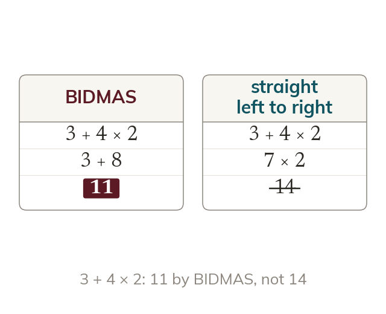

BIDMAS
Operations run in a fixed order: Brackets, Indices, Multiplication and Division, Addition and Subtraction. Operations of equal rank go left to right.
Operations run in a fixed order: Brackets, Indices, Multiplication and Division, Addition and Subtraction. Multiplication and division rank equally with each other, as do addition and subtraction - when two operations of equal rank appear together, they're done left to right.